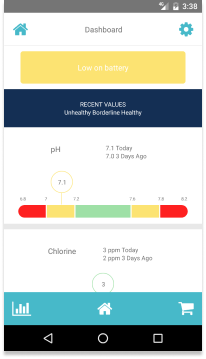

Sutro is a hardware startup developing a smart pool monitor that measures water chemistry and delivers the appropriate chemicals as they're depleted.
Codebase's Sutro team used react.js to create an iPhone and Android app to monitor pool chemical content and prescribe additional chemicals to maintain pH balance.
